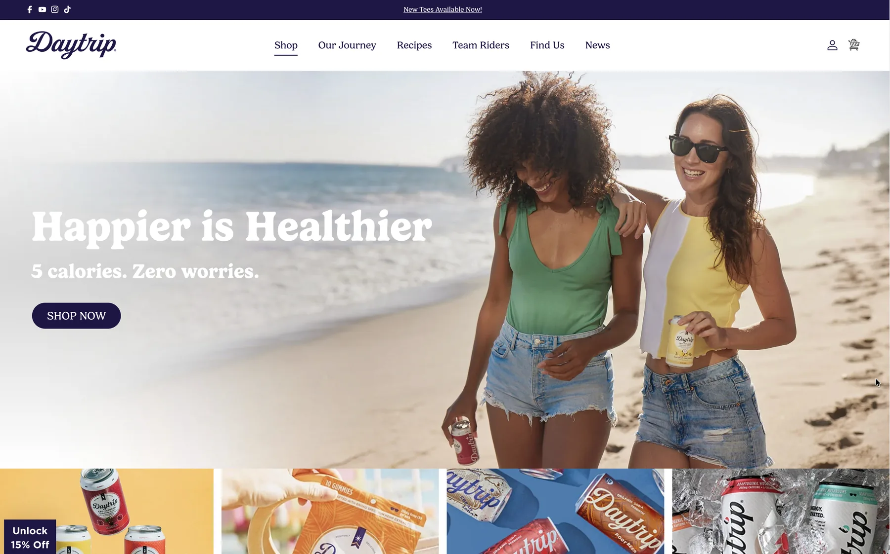
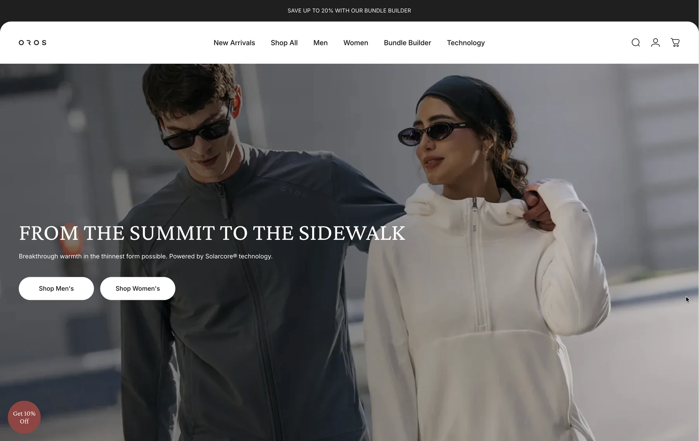
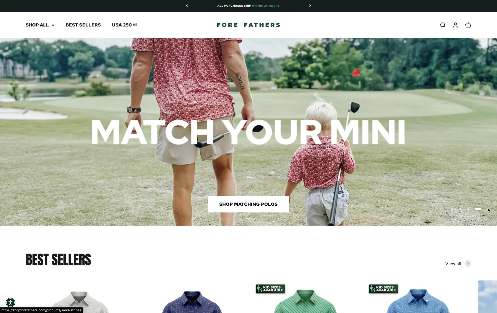

Custom Shopify 2.0 themes
I build a theme from your Figma design or brief, made of sections and blocks your team can rearrange in the theme editor without calling a developer every time.
I'm a freelance Shopify expert developer based in Porto, Portugal. I build and fix Shopify 2.0 stores for brands in the UK, the US and Europe: custom themes from a Figma design, migrations from older themes, custom sections in Liquid, and the speed and app clean-up that keeps a store fast.

I write the code myself, on every project. These are the four kinds of Shopify work I do most.
I build a theme from your Figma design or brief, made of sections and blocks your team can rearrange in the theme editor without calling a developer every time.
Stores still on a 1.0 theme miss out on sections everywhere, app blocks and faster updates. I rebuild the templates as 2.0 sections, keep the design, and map redirects so existing links keep working.
Product pages that change with the variant, bundles, custom collection layouts. I build them in Liquid and JavaScript, using the Section Rendering API where content has to update without a page reload.
I remove apps the store no longer needs, replace some with a few lines of theme code, and connect the ones it does need, such as subscription apps like Recharge and Appstle.
Plenty of stores run well on a standard theme and a few good apps, and if that's you, I'll say so. Hiring a Shopify expert pays off when the design is custom, when the app stack has grown until pages load slowly, when you need something no app does, or when the theme is too old to edit comfortably.
I work with brands across the UK, including London, and in the US and Europe, all online. You talk to me directly from the first call to launch, not to an account manager, and the person writing your theme code is the one answering your messages.
If you're budgeting, read how much a Shopify expert costs. Moving to Shopify's new customer accounts? I explain what changed and what to check.

Migrated a technical outdoor apparel brand from a Shopify 1.0 theme to Online Store 2.0, rebuilding product pages, collections and custom features as reusable sections instead of third-party apps.

Moved a family apparel brand to Online Store 2.0, kept WordPress for the blog, and mapped product links and redirects so existing URLs still lead to the right products and collections.

Built a custom Shopify 2.0 theme from Figma, with a product page that updates its colours and content per variant through the Section Rendering API, and made the store ADA compliant.
A free 20-minute call about the store, what's not working and what you want it to do.
A written fixed quote with the scope and what's included, before any work starts.
I build and test on an unpublished theme, so the live store keeps selling while the work happens.
We publish when you're happy, and I stay reachable for fixes and changes afterwards.
A Shopify developer works on the code behind a store: the Liquid theme, the sections and blocks your team edits, the JavaScript that runs product pages and carts, and the connections to apps and other systems. A Shopify expert developer also knows when not to write code, because an existing app or a theme setting already does the job.
It depends on the work. A theme fix, a migration from an older theme and a custom theme built from a Figma design are very different amounts of work. After a free 20-minute call I send a written fixed quote with the scope, so you know the full cost before anything starts.
If a well-reviewed app does exactly what you need, use the app. Hiring a Shopify expert makes sense when the design is custom, when apps are slowing the store down or clashing with each other, when you need a feature no app offers, or when you're moving from an older theme to Online Store 2.0.
Yes. On migrations I rebuild the templates as sections and blocks, keep the design, and map any changed URLs to redirects so existing links still lead to the right products and collections. That's what I did when I moved Fore Fathers from a 1.0 theme to Online Store 2.0.
Yes, online. If you're looking for a Shopify developer in London or anywhere in the UK, Portugal shares your time zone, so I work your hours. For US brands, my afternoons overlap with the East Coast morning, which gives us a daily window for video calls.
Tell me what the store needs, and I'll tell you honestly whether it's a theme setting, an app, or a job for a developer.